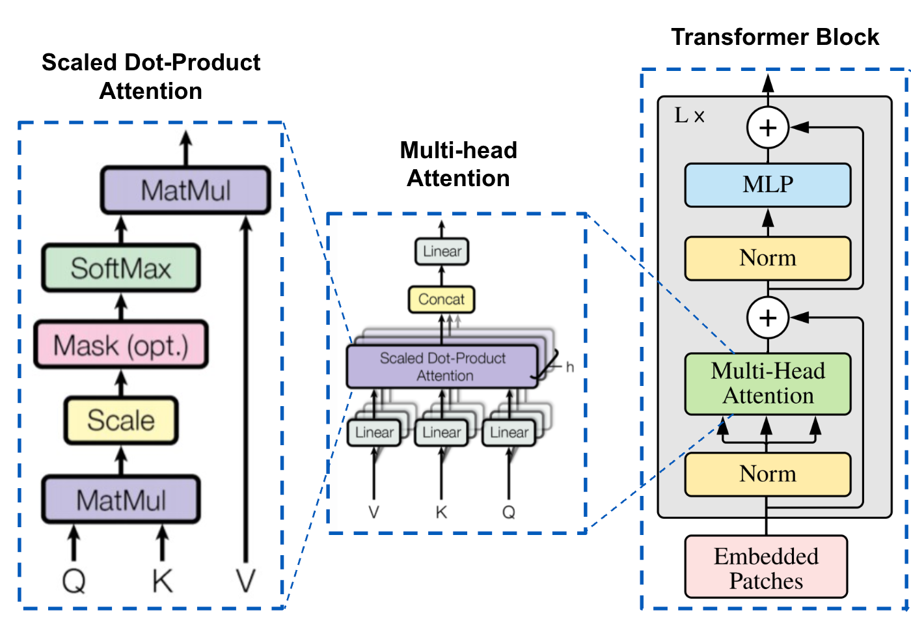

什么是 Multi-Head Attention?
- by @karminski-牙医

多头注意力（Multi-Head Attention）是 Transformer 架构中的一个核心组件，它通过并行运行多个注意力机制来增强模型的性能。
在多头注意力机制中，"头"是指一个独立的注意力机制。每个头有自己的一组权重，用于计算输入的自注意力。通过使用多个头，模型可以从不同的角度和特征空间中提取信息。
工作原理
首先我们来看注意力公式, 给定输入向量 $Q$（查询）、$K$（键）和 $V$（值），注意力机制的计算公式为：
$$ \text{Attention}(Q, K, V) = \text{softmax}\left(\frac{QK^T}{\sqrt{d_k}}\right)V $$
其中，$d_k$ 是$K$ (键) 向量的维度。
多头注意力则将上面的公式拆分, 通过多个独立的注意力头来增强模型的能力。每个头有自己的查询、键和值的线性变换。公式如下：
$$ \text{MultiHead}(Q, K, V) = \text{Concat}(\text{head}_1, \ldots, \text{head}_h)W^O $$
其中每个 $\text{head}_i$ 计算为：
$$ \text{head}_i = \text{Attention}(QW_i^Q, KW_i^K, VW_i^V) $$
$W_i^Q, W_i^K, W_i^V, W^O$ 是学习到的参数矩阵。
多头注意力机制将输入分成多个"头"，每个头独立地执行自注意力计算，然后将所有头的输出合并起来。每个头可以关注输入序列的不同方面，从而捕获更丰富的特征信息。
核心机制
- 维度拆分：将输入向量维度 $d_{model}$ 通过线性投影拆分为$h$个$d_k$维度（$d_k$ = $d_{model}/h$），每个头关注不同的特征子空间
优点
- 并行计算优化：虽然总计算量（FLOPs）与单头注意力相同，但拆分后的多个小矩阵乘法（尺寸$h×d_k$）更适配GPU并行计算特性 (当然实际 FLOPs 消耗会略高于单头，因为增加了投影矩阵计算)
缺点
内存/计算开销：每个头需要独立的 Q/K/V 投影矩阵，参数数量随头数线性增长：
$$ \underbrace{3hd_kd_{model}}{\text{输入投影}} + \underbrace{hd_kd{model}}{\text{输出投影}} = 4hd_kd{model} $$
其中：
- 输入投影：每个头包含 $W_i^Q, W_i^K, W_i^V \in \mathbb{R}^{d_{model}\times d_k}$ 三个矩阵，共 $3hd_kd_{model}$ 参数
- 输出投影：合并矩阵 $W^O \in \mathbb{R}^{hd_k\times d_{model}}$，贡献 $hd_kd_{model}$ 参数
- 当采用标准配置 $d_k = d_{model}/h$ 时，总参数量简化为 $4d_{model}^2$（与头数无关）
键值缓存瓶颈：自回归解码时每个头需要独立缓存 K/V 矩阵，显存占用为 $2bd_{model}L$（b=batch_size, L=seq_len）
信息冗余：实验表明不同头可能学习到相似的注意力模式（尤其在后层），造成计算资源浪费
工程复杂度：多头并行计算需要精细的内存布局管理，在长序列场景下容易导致内存带宽瓶颈
与 MQA/GQA 的对比
| 特性 | Multi-Head (MHA) | Multi-Query (MQA) | Grouped-Query (GQA) |
|---|---|---|---|
| 键值投影共享 | 无 | 所有头共享同一 K/V 投影 | 分组内共享 K/V 投影 |
| 参数量 | $4hd_kd_{model}$ | $hd_kd_{model} + 2d_kd_{model}$ | $(h + 2g)d_kd_{model}$ |
| 解码显存占用 | 高 | 极低（1/h） | 中等（g/h） |
| 模型容量 | 最高 | 最低 | 可调节（通过分组数 g） |
| 典型应用场景 | 编码器 | 低内存推理场景 | 质量与效率的平衡点 |
后续我们会逐一介绍多头注意力的优化版本 MQA/GQA 的原理和实现.